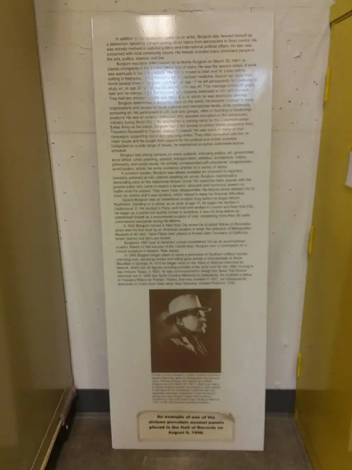

The claim
Edgar Cayce, an American psychic, gave readings from the 1920s to the 1940s describing a 'Hall of Records' buried near the Sphinx, containing the archives of Atlantis, to be opened at the end of the twentieth century. The claim became a fixture of Egyptian fringe literature.
Maps, diagrams and images



The tests
Seismic surveys around the Sphinx in the 1990s were reported by some researchers as showing chambers; the claims were disputed by geophysicists, and subsequent investigation found the anomalies consistent with natural features and with the water table. Excavations and conservation work around the monument have not found a chamber or any archive.
The Sphinx itself has been studied extensively, including the enclosure and the geology of the plateau, and the ground beneath it is well characterised.
Documented: the prediction and its terms.
Documented: the surveys and the excavations.
Not found: any chamber or archive.
Not supported: the seismic claims.
The honest label: debunked.
Why it is in the archive
Because it is a psychic prediction that was specific, dated and testable, and it failed on all three.
Open resources on this topic
- BookResults of the test of the steam and electric plant at the Hall of records, New York city; a brief statement — Bolton, Reginald Pelham, 1856-1942 · 1916 (Internet Archive, free to read)
- BookList of original papers, records and documents made prior to April 28, 1788 which were transferred to the Hall — 1945 (Internet Archive, free to read)
- BookThe Hall of Records as Masonic Lodge Room — Tom Beaver (Internet Archive, free to read)
- PapersOpen-access articles: DOAJ · PubMed Central · Internet Archive Scholar
- BooksPublic-domain and borrowable copies: Open Library · Project Gutenberg · Google Books
More images
Cite this page
Momin, S. (2026). The Hall of Records. The Larger World Archive. https://drsamonline.github.io/LARGE_GLOBE/hall-of-records.htmlMomin, Sohil. “The Hall of Records.” The Larger World Archive, 2026, https://drsamonline.github.io/LARGE_GLOBE/hall-of-records.html.Momin, Sohil. “The Hall of Records.” The Larger World Archive, 2026. https://drsamonline.github.io/LARGE_GLOBE/hall-of-records.html.@misc{the2026hall,
author = {Momin, Sohil},
title = {The Hall of Records},
year = {2026},
howpublished = {The Larger World Archive},
url = {https://drsamonline.github.io/LARGE_GLOBE/hall-of-records.html},
note = {Last reviewed 20 November 2026}
}Last reviewed 20 November 2026 · Corrections policy · this page is not peer reviewed
Sources for this page
- Wikipedia, “Edgar Cayce” — the predictionen.wikipedia.org
- Wikipedia, “Great Sphinx of Giza” — the monumenten.wikipedia.org
- Wikipedia, “Seismology” — the survey methoden.wikipedia.org
- Wikipedia, “Atlantis” — the claimed subjecten.wikipedia.org